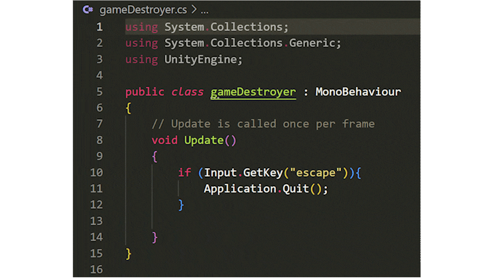

Using Unity Engine, c# code, and 3D artwork, any story can become real in digital 3D!
A virtual environment has infinite ways to bring something to life within you, be that a feeling. Virtual environments have the power to teach you, encourage you.
Using spatial and architectural design theory, environments can become more than a space, they can elicit an emotional response from occupants or affect their behavior.
View below some screenshots from the developement of this virtual environment.

Desiging an experience in virtual environments is my specialisation and it goes like this? First, what is my experience goals? How should the user feel? What experience should they have? Should they learn something about me or the world?
Then determine structure, is it Linear or Non-Linear? What kind of space am I making, an intimate one? A large open space? A prospect and a refuge? Then I start considering the layout, I draw sketches of the environment map, skethces of points of view from within, I draw up moodboards, maps and a flow chart for the experience. Looking at the flow chart lets me determine the places where I have interactions and where I need to write code.
At home I have created a two part scrapbook detailing the entire process for my reference! It's the most intrinsically valuable thing I own! Here is some images from the book.